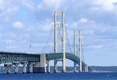

Static Equilibrium
|
The structural members in this high rise building are in static equilibrium.
|
This truck, moving at a constant velocity, is in static equilibrium.
|
Objects in static equilibrium are objects that are not accelerating (either linear acceleration or angular acceleration). These objects may be stationary, such as a building or a bridge, or they may have a constant velocity, such as a car or truck moving at a constant speed on a strait patch of road.
Newton's second law states that the force exerted on an objects is equal to the mass of the object times the acceleration it experiences. Therefore, if we know that the acceleration of an object is equal to zero, then we can assume that the sum of all forces acting on the object are is zero. Individual forces acting on the object, represented by force vectors, may not have zero magnitude but the sum of all the force vectors will always be equal to zero for objects in equilibrium. Engineering statics is the study of objects in static equilibrium, and the simple assumption of all forces adding up to zero is the basis for the subject area of engineering statics.
Equilibrium follows a similar pattern for angular accelerations. The rotational equivalent of Newton's second states that the moment exerted on an object is equal to the moment of inertia of that object times the angular acceleration of the object. If we know the angular acceleration of an object is equal to zero, then we know the sum of all moments acting on the object is equal to zero.
Worked Problems
Are the following objects in static equilibrium?
|
Object
|
Comments |
|

This bridge is a stationary structure.
|
This object is in equilibrium. Though the bridge may sway slightly because of the wind and the traffic crossing the bridge, the structure has a velocity and an acceleration that are essentially zero. |
|
These skydivers have reached terminal velocity, the balance of gravitational forces and wind resistance forces give the skydivers a constant velocity.
|
These people are in equilibrium. They have a non-zero velocity, but that velocity is constant. Constant velocity by definition means zero acceleration so these skydivers are in equilibrium.. |

This baseball was thrown strait up in the air. It is at its highest point where it has a velocity of zero.
|
This object is not in equilibrium. Though the velocity of the object is zero, the acceleration is not. The velocity of the baseball one moment before and after this point is not zero and this change in velocity is acceleration. |
 |
| Author: Jacob Moore has liscenced this work under a Creative Commons Attribution-NonCommercial 3.0 Unported License. |